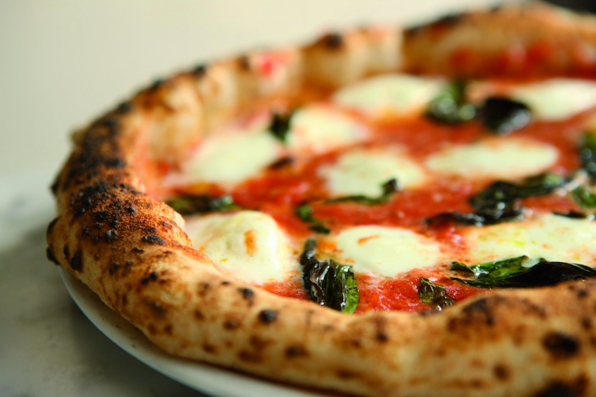

Servings
Ingredients
For the dough
- Flour - 640g
- Water (room temperature) - 360g
- Salt (fine) - 14g
- Yeast (dried or fresh) - around 0.2g to 0.5g instant yeast - multiply by 3 for fresh yeast
For the toppings
- Tinned tomatoes - 300g tin
- Tomato puree (optional) - a tablespoon
- Salt - sprinkling of table salt or sea salt
- Pepper - freshly ground black pepper
- Mozzarella - 2 x 125g bags of fresh Mozzarella balls
- Parmesan - about 30g
- Olive Oil - a few glugs of extra virgin olive oil
- Fresh Basil - hand full of fresh leaves
Steps
For the dough
- Mix all the ingredients into a shaggy mass in a large bowl, starting by adding the water first. You can do this by hand or use a wooden spoon.
- Cover the bowl with cling film, a plastic carrier bag, or a damp cloth (if the cloth isn't damp the dough may dry out).
- Leave the dough to rest for around 1 hour (the technical term for this process is the Autolyse).
- Turn the dough out onto the counter and knead for around 5 minutes
- Place the dough back into the bowl and cover tightly.
- Leave the dough to prove (in one big lump, don't worry too much about the shape) for around 20 hours
- Divide the dough into 4 equal parts (250g each) using some kitchen scales and a knife (or dough scraper). Do this about 4 hours before you intend to cook the pizza (after about a 20 hour prove)
- Place each dough ball into a small bowl and cover. Alternatively, use a large tupperware container with a lid, or two smaller ones
- Leave the dough balls to prove again for about 4-6 hours.
For the tomato sauce
- Blend a tin of quality plum tomatoes into a smooth sauce
- Cook the sauce until it reaches the desired thickness (still runny but quite thick)
- Add a tablespoon or 2 of tomato puree for a richer, sweeter sauce (optional).
- Season with salt and pepper to taste
For the shaping
- Ensure that you baking stone or pizza steel is inside your oven. If you don't have either of these, you can use a baking tray turned upside down. Below I've provided a link to a pizza steel on Amazon. These are widely regarded as the best solution for home ovens.
- Get your oven up to temperature. For pizza ovens 420 - 480 degrees Celsius (790 - 900 Fahrenheit). For a regular domestic oven, as hot as it will get (around 260 Celsius or 500 Fahrenheit). An infrared thermometer is useful here for measuring the temperature of the cooking surface.
- Dust a dough ball with plenty of flour and remove from the container. Place the dough into a large bowl with a generous covering of flour in the base of it.
- In the bowl, press down from the centre of the dough towards the edges. The idea here is to move the air from the middle of the dough to the outside, where it will form a crust. Be careful not to press the edge of the dough down (the crust), any air removed cannot be regained and you will not end up with a well-risen crust.
- Keep turning the dough as you work the air towards the edges. You should start forming a small pizza shape at this stage.
- Turn the dough over and repeat this process in the bowl, on the other side
- Remove from the bowl and place on the counter, ensuring the base of the dough is coated with plenty of flour.
- Stretch the dough - remembering not to touch the edge of the dough (the crust), hold the dough down with your right hand, and with the other gently stretch the dough outwards
- Repeat the stretch - keep turning the dough and repeating this until you have a base which is about 9 to 10 inches in diameter. You can usually go thinner than you think so don't worry too much about the dough ripping.
- Top the base with around 2 soup spoons (dessert spoons) of tomato sauce and spread gently across the pizza and up to the edges (just before the crusts). Be careful not to press down as you spread or you may make the dough stick to the counter.
- Spread about a handful of Mozzarella (half of a 125g packet) evenly across the pizza, and you are ready to cook! (You can add parmesan, basil, and olive oil before or after cooking - if you want to add them.)
- Load straight onto baking stone/tray inside oven.
- For a pizza oven, cook for around 60 - 90 seconds and turn every 20 - 30 seconds as required. For a regular domestic oven, cook for around 6 - 8 minutes, turning about every 2 - 3 minutes as required.
- Grate parmesan on top and add some torn basil if you like. You can also optionally finish with a drizzle of olive oil and a sprinkling of black pepper.
Return to top
Return to Italy Recipes
Return to Menu